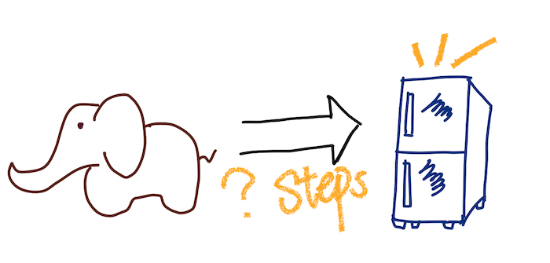

Hi, friends! Welcome to my website. My name is Sara Song, data professional with 3 years of experience in modeling, analytics, and reporting. Recently, I am interested in building my own website using HTML and CSS. Hope here can be a good place to share my thoughts, interests, and data knowlege.
Algorithms is a popular word in Machine Learning and Data Science. But can you use some simple sentences to explain what it is? This year, I have been learning algorithms from Professor Pavel Panchekha. I want to share and discuss some algorithms topics with you! For example, how many steps do you need to put an elephant into the fridge?... Ok, It's a joke, but I do want to try my new Apple Pencil to draw a picture... (please forgive my painting skills...)
I know that Math is a hard subject for most people. But why it is important to learn? When we read news about politics, economics and diseases, people always care about statistics from those topics. But how many people really understand the truth behind these numbers? For example, is 5.7% of people small or large? It means 1 in every 17 people, and it is the situation for Covid in Utah (5.7% of people are currently infected). It also means that if we know more than 17 people, which is very normal, we could already know at least 1 person that got Covid. Is that true? So for this section, I also want to share some interesting stories that show the power of data. For example, the following plot is my wish to everyone in 2021: Hope all good things come to your life and all bad things get out of your life! Happy New Year!
Dolce far niente, sweetness of doing nothing. Life has ups and downs. If I share something here, it must means that it's my joy :)